验证示例
传播的谐波剪切波引起的节理滑移
问题描述
该问题涉及平面不连续面对入射剪切波传播的影响。图 1（Figure 1） 示出了两个均匀、各向同性、半无限弹性区域，二者被一个具有有限抗剪强度的平面不连续面分隔。法向入射的平面谐波剪切波将在不连续面处引起滑移，从而导致摩擦能量耗散。因此，能量将在不连续面处发生反射、透射和吸收。使用 3DEC 对该问题建模，并利用计算结果确定透射系数、反射系数和吸收系数。这些系数与解析解（Miller 1978）给出的系数进行了比较。
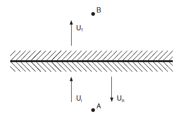
图 1：入射谐波在不连续面处的透射与反射。
解析解
Miller（1978）针对均匀材料情况给出的反射系数 (R)、透射系数 (T ) 和吸收系数 (A) 为
其中 \(E_I\)、\(E_T\) 和 \(E_R\) 分别表示与入射波、透射波和反射波相应的每单位面积每振荡周期的能量通量。系数 \(A\) 是衡量不连续面处吸收能量的量度。能量通量 \(E_I\) 由下式给出
其中：
\(T\) = \((2 \pi) / \omega\) = 入射波的周期；
\(\sigma_s\) = 剪应力；
\(v_s\) = 沿 \(x\) 方向的质点速度；以及
\(\omega\) = 入射波频率（弧度/秒）。
对于弹性介质，
因此，
其中 \(c\) 为传播剪切波的速度。
入射波的能量通量 \(E_I\) 在 A 点（见 图 1（Figure 1））针对不连续面无滑移的情况计算。透射波的能量通量 \(E_T\) 在 B 点针对不连续面发生滑移的情况计算。反射波的能量通量 \(E_R\) 通过确定滑移与无滑移两种情况下速度之差来计算。
数值模型
针对无量纲频率 \(\omega \gamma U/\tau_s\) 的四个取值确定了数值结果，其中 \(\gamma = (\rho G)^{1/2}\)，\(\tau_s\) = 不连续面黏聚力，\(U\) = 入射波的位移幅值，\(\rho\) = 介质密度，\(G\) = 介质剪切模量。
3DEC 所建模的问题几何如 图 2（Figure 2） 所示。介质采用弹性、完全可变形块体建模，块体高度为 \(h/ 2\)、宽度为 \(b\)、长度为 \(l\)。块体之间由一个在 \(xz\) 平面内延伸的平面不连续面分隔。块体内部离散为四面体网格单元，如 图 3（Figure 3） 所示。模型顶部和底部采用非反射边界条件。为模拟平面剪切波条件，在 \(x\) = 0 和 \(x\) = \(b\) 处沿 \(yz\) 平面的边界上，约束了 \(y\) 方向的位移。为模拟平面应变条件，在 \(z\) = 0 和 \(z\) = l 处沿 \(xy\) 平面的边界上，约束了 \(z\) 方向的位移。
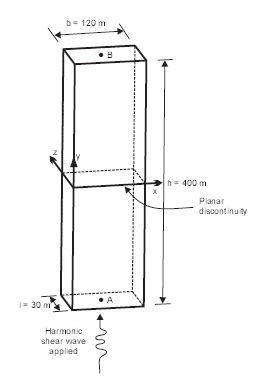
图 2：简谐剪切引起的滑移问题的几何。

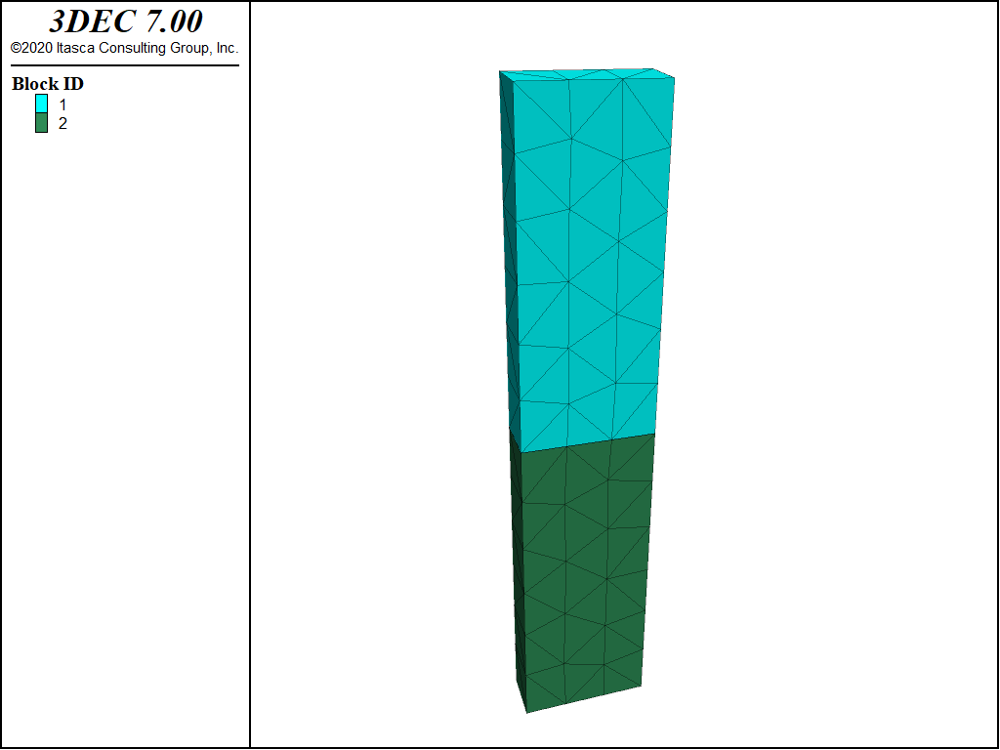
图 3：显示内部离散的 3DEC 块体模型。
材料属性
弹性介质和平面不连续面的材料属性列于下面两个表中：
| 质量密度 density | 2,650 kg/m3 |
| 剪切模量 shear | 10,000 MPa |
| 体积模量 bulk | 16,667 MPa |
| 法向刚度 stiffness-normal | 10,000 MPa/m |
| 剪切刚度 stiffness-shear | 10,000 MPa/m |
| 摩擦角 friction | 0 |
| Cohesion cohesion | 2.5、0.5、0.1 和 0.02 MPa |
动力荷载
施加在底部边界上的谐波剪应力具有以下特征：
入射波最大应力： 1.0 MPa
入射波频率：1 Hz
谐波类型： 正弦波
注意，为计入同时存在的非反射边界，数值模型中入射波的幅值必须加倍。
结果
波通过滑移不连续面传播的解析解（Miller 1978）假定采用黏聚力恒定的莫尔-库仑不连续面破坏准则。然而在 3DEC 中，当超过不连续面的抗剪强度和/或抗拉强度时，会在其后所有计算中忽略黏聚力和抗拉强度。由于解析解假定不连续面黏聚力恒定、与应力时程无关，因此编写了一个 FISH 函数，在超过不连续面抗剪强度和/或抗拉强度时防止将黏聚力和抗拉强度置零（见下文文件 “sihsw.fis”）。
第一次计算通过将不连续面黏聚力设为 2.5 MPa，假定不连续面保持弹性。在模型底部施加了幅值为 1 MPa、频率为 1 Hz 的应力波。应注意，位移和速度在四面体的节点处确定，而应力则在四面体的形心处确定。在 A 点 (40, 15, −200) 和 B 点 (40, 15, 200) 监测剪应力、速度和位移的时程。在 A 点和 B 点附近监测应力的线性时程。A 点和 B 点的剪应力如 图 4（Figure 4） 所示。由 A 点和 B 点应力时程的幅值可以清楚地看出，波完全透过该不连续面传播。从 图 4（Figure 4） 还可以清楚地看出，非反射边界条件对法向入射波提供了完全吸收。
在下一次计算中，将黏聚力降低到 0.5 MPa，以允许沿不连续面发生滑移。A 点和 B 点记录的剪应力如 图 5（Figure 5） 所示。A 点的峰值应力是入射波与由滑移不连续面反射的波的叠加。图 6（Figure 6） 和 图 7（Figure 7） 给出了不连续面黏聚力为 0.1 和 0.02 MPa 时 A 点和 B 点的剪应力。从 图 5（Figure 5） 到 图 7（Figure 7） 可以看出，B 点的剪应力分别被 0.5、0.1 和 0.02 MPa 的不连续面强度所限制。

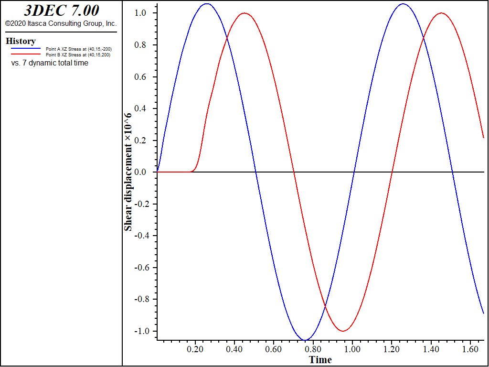
图 4：弹性不连续面情况下 A 点和 B 点的剪应力随时间变化（黏聚力 = 2.5 MPa）。

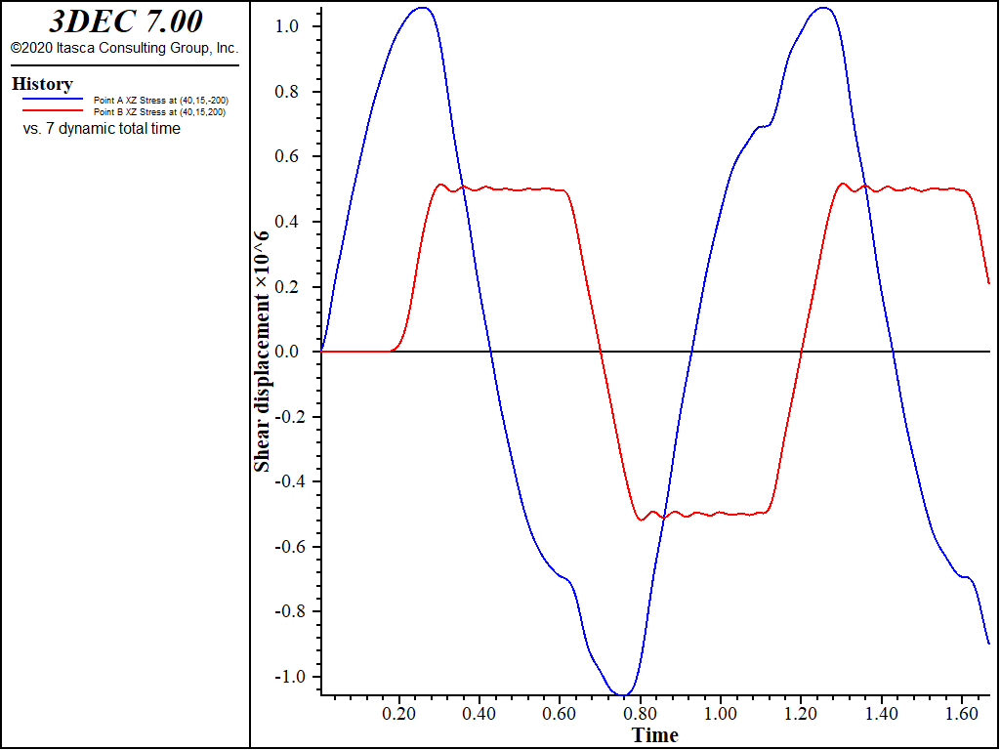
图 5：弹性不连续面情况下 A 点和 B 点的剪应力随时间变化（黏聚力 = 0.5 MPa）。

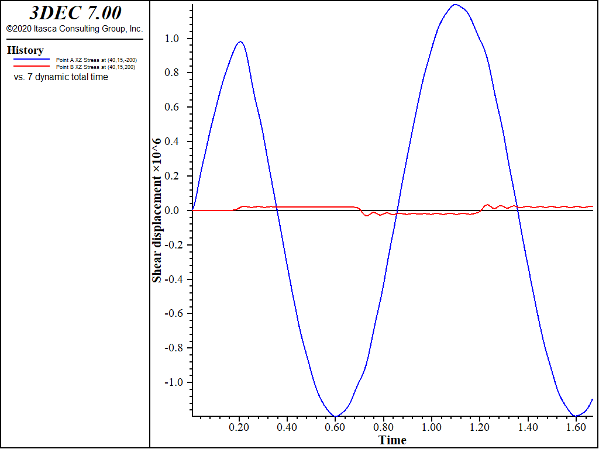
图 7：弹性不连续面情况下 A 点和 B 点的剪应力随时间变化（黏聚力 = 0.02 MPa）。
能量通量 \(E_I\) 对不滑移不连续面（即黏聚力 = 2.5 MPa）在 A 点按式 (2) 计算。\(E_T\) 对滑移不连续面（即黏聚力 = 0.5、0.1 和 0.02 MPa）在 B 点计算。\(E_R\) 在 B 点通过取滑移与不滑移不连续面两次计算的速度差确定。反射系数 (R)、透射系数 (T )、吸收系数 (A) 按式 (1) 计算（见下文文件 “sihsw.fis” 中的 FISH 函数 能量系数 FISH 函数（fenergy）），并绘制于 图 8（Figure 8） 中，同时给出解析解（Miller 1978）。3DEC 结果与解析解吻合得非常好（图 8（Figure 8））。

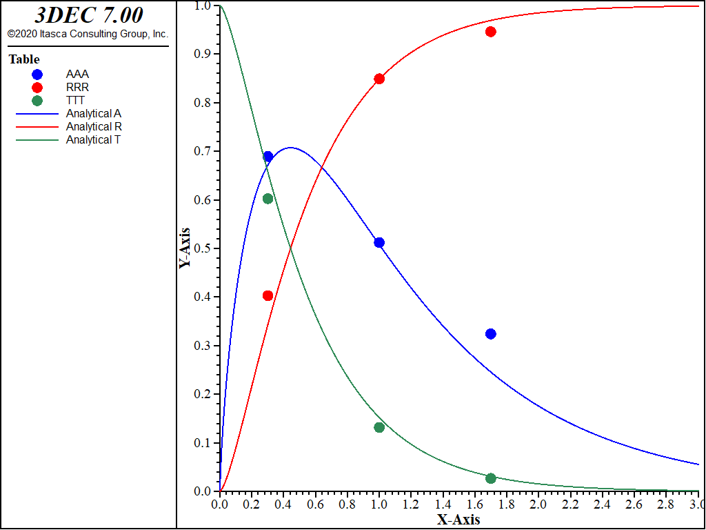
图 8：透射系数、反射系数和吸收系数的比较。
数据文件
;---------------------------------------------------------------------
; 动力问题“谐波诱发滑移”的脚本文件
;---------------------------------------------------------------------
model new
fish automatic-create off
model title "Slip induced by harmonic wave"
model config dyn
model large-strain on
fish define setup
global mat_shear = 1e10
global mat_dens = 2650
global freq = 1.0
global tload = 10.0
global w = 2.0 * math.pi * freq
global height = 400.0
end
[setup]
block create brick 0,80 0,30 -200,200
block cut joint-set dip-direction=90 dip 0 origin 80,0,0
;
block zone generate edgelength 31
;
block zone cmodel assign el
block zone prop dens=[mat_dens] bulk=16.667e9 shear=[mat_shear]
;
; 在 z=-200 和 z=200 的 xy 平面上设置黏性边界
block gridpoint apply visc-x visc-z range pos-z -200
block gridpoint apply visc-x visc-z range pos-z 200
;
; 在 y=0 和 y=30 的 xz 平面上设置滚动边界
block gridpoint apply vel-y=0 range pos-y 0
block gridpoint apply vel-y=0 range pos-y 30
;
; 在 x=0 和 x=80 的 yz 平面上设置 zvel=0
block gridpoint apply vel-z=0 range pos-x 0
block gridpoint apply vel-z=0 range pos-x 80
;
; z=-200 处 xz 平面上的剪应力
; 为边界上施加的应力
; 设置正弦波函数
; freq = 1 Hz[freq = 10.0]
fish def sin_
sin_ = math.sin(2.0*math.pi*mech.time*freq)
end
block face apply stress-xz 2e6 fish sin_ range pos-z -200
; 设置历史
hist interval=10
block hist name 'Point A' stress-xz pos 40,15,-200
block hist name 'Point B' stress-xz pos 40,15,200
block hist name 'v1' vel-x pos (40,15,-200)
block hist name 'v2' vel-x pos (40,15,200)
block hist name 'd1' disp-x pos (40,15,-200)
block hist name 'd2' disp-x pos (40,15,200)
model hist name 'time' dynamic time-total
program call "sihsw.fis"
model save 'dint_ini'
; 节理为弹性
block contact jmodel assign el
block contact prop stiffness-normal=10.0e9 stiffness-shear=10.0e9
block contact material-table default prop stiffness-normal=10.0e9 ...
stiffness-shear=10.0e9
model cyc 3000
history export 'v1' vs 'time' table '1'
table '1' export 'elastic' truncate
[find_u]
model save "dinte"
; --- 黏聚力 0.5 ---
model rest "dint_ini"
; 节理为理想塑性
block contact jmodel assign mohr
block contact prop stiffness-normal=10.0e9 stiffness-shear=10.0e9 ...
coh=0.5e6 ten=1e12 coh-res 0.5e6 ten-res 1e12
block contact material-table default prop stiffness-normal=10.0e9 ...
stiffness-shear=10.0e9
model cyc 3000
table '1' import 'elastic'
history export 'v1' vs 'time' table '2'
history export 'v2' vs 'time' table '3'
[energy(0.5e6)]
; 创建并导出数据表，以与解析解比较
table '10' export 'AAA' truncate
table '11' export 'RRR' truncate
table '12' export 'TTT' truncate
model save "dint0p5"
; --- 黏聚力 0.1 ---
model rest "dint_ini"
block contact jmodel assign mohr
block contact prop stiffness-normal=10.0e9 stiffness-shear=10.0e9 ...
coh=0.1e6 ten=1e12 coh-res 0.1e6 ten-res 1e12
block contact material-table default prop stiffness-normal=10.0e9 ...
stiffness-shear=10.0e9
model cyc 3000
table '1' import 'elastic'
history export 'v1' vs 'time' table '2'
history export 'v2' vs 'time' table '3'
; 导入现有数据表或结果，以便追加新值
table '10' import 'AAA'
table '11' import 'RRR'
table '12' import 'TTT'
[energy(0.1e6)]
; 现在导出
table '10' export 'AAA' truncate
table '11' export 'RRR' truncate
table '12' export 'TTT' truncate
model save "dint0p1"
; --- 黏聚力 0.1 ---
model rest "dint_ini"
block contact jmodel assign mohr
block contact prop stiffness-normal=10.0e9 stiffness-shear=10.0e9 ...
coh=0.02e6 ten=1e12 coh-res 0.02e6 ten-res 1e12
block contact material-table default prop stiffness-normal=10.0e9 ...
stiffness-shear=10.0e9
model cyc 3000
table '1' import 'elastic'
history export 'v1' vs 'time' table '2'
history export 'v2' vs 'time' table '3'
table '10' import 'AAA'
table '11' import 'RRR'
table '12' import 'TTT'
[energy(0.02e6)]
table '10' export 'AAA' truncate
table '11' export 'RRR' truncate
table '12' export 'TTT' truncate
model save "dint0p02"
; --- 获取解析解 ---
model new
table '10' import 'AAA'
table '11' import 'RRR'
table '12' import 'TTT'
table '10' label 'AAA'
table '11' label 'RRR'
table '12' label 'TTT'
program call "sihsw-ana.fis"
[analytical_table]
model save 'anal_tables'
FISH 文件
;--------------------------------------------------------------------------
; 用于动力问题“谐波诱发滑移”的 FISH 函数
;---------------------------------------------------------------------------
fish def ini_time
global speed = math.sqrt(mat_shear/mat_dens)
global time0 = 0.0
global time1 = height/speed
global time2 = time1 + 1./freq
end
[ini_time]
fish define find_u
command
history export 'd1' vs 'time' table '4'
end_command
local pnt = table.get(4)
local s = table.size(pnt)
local max_disp = 0.0
local min_disp = 1e20
loop local i (1,s)
local time = table.x(pnt,i)
if time >= time1 then
if time <= time2 then
local val = math.abs(table.y(pnt,i))
max_disp = math.max(max_disp,val)
min_disp = math.min(min_disp,val)
end_if
end_if
end_loop
global UUU = (max_disp - min_disp) * 0.5
; 写入文件以供后续使用
local status = file.open('ufile.txt',1,1)
local line = array.create(1)
line(1) = UUU
status = file.write(line,1)
status = file.close
end
fish define read_u
local status = file.open('ufile.txt',0,1)
local line = array.create(1)
file.read(line,1)
UUU = float(line(1))
end
fish define energy(cohesion) ;- 计算能量系数
; 用于节理滑移算例 -
; 表 1：弹性节理工况下 A 点的 x 方向速度
; 表 2：节理滑移工况下 A 点的 x 方向速度
; 表 3：节理滑移工况下 B 点的 x 方向速度
; 表 10：所有工况的 A 值
; 表 11：所有工况的 R 值
; 表 12：所有工况的 T 值
; Ei：入射波的能流
; Et：透射波的能流
; Er：反射波的能流
; AAA：接触面吸收能量的度量
; 将 AAA、RRR、TTT 结果分别存入 A、R、T 表
local Cs = math.sqrt(mat_shear / mat_dens)
local factor = mat_dens * Cs
local Ei = 0.0
local Et = 0.0
local Er = 0.0
local t_n_1 = 0.0
local AAA = 0.0
local TTT = 0.0
local RRR = 0.0
local items = table.size(1)
loop local i (1,items)
local t_n = table.x(1,i)
local d_t = t_n - t_n_1
t_n_1 = t_n
local Vsa_e = table.y(1,i)
local Vsa_s = table.y(2,i)
local Vsb_s = table.y(3,i)
Ei = Ei + factor * Vsa_e * Vsa_e * d_t
Et = Et + factor * Vsb_s * Vsb_s * d_t
Er = Er + factor * (Vsa_s-Vsa_e) * (Vsa_s-Vsa_e) * d_t
end_loop
RRR = math.sqrt(Er/Ei)
TTT = math.sqrt(Et/Ei)
AAA = AAA + math.sqrt(1.0-RRR*RRR-TTT*TTT)
; 用于解析解
read_u
local g = math.sqrt(mat_dens*mat_shear)
local x = (w * g * UUU) / cohesion
local aaatab = table.get(10)
table(aaatab,x) = AAA
local rrrtab = table.get(11)
table(rrrtab,x) = RRR
local ttttab = table.get(12)
table(ttttab,x) = TTT
end
含不连续面的无限弹性介质中的线源
问题描述
该问题涉及单个不连续面在爆炸荷载下的动力性状。图 9（Figure 9） 所示的问题由弹性介质中横向无限延伸的平面裂纹以及距不连续面一定距离 \(h\) 处的动荷载组成。使用 3DEC 对该问题建模，以确定线源（沿 \(z\) 方向）作用下不连续面的动力反应。由 3DEC 数值分析得到的点 P 处界面滑移量，与 Day（1985）推导的闭合解进行了比较。
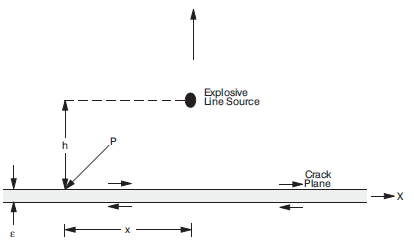
图 9：易滑不连续面附近爆炸震源的问题几何。
解析解
Day（1985）推导了裂纹滑移随时间变化的闭合解，其表达式为
其中
\(r\) = \((x^2 + h^2)^{1/2}\)，即点源到裂纹上监测滑移点处的距离；
\(H(\tau)\) = 阶跃函数；
\(\tau\) = \(t - (r/\alpha)\);
\(m_o\) = 震源强度；
\(\alpha\) = 压缩波速度；
\(\beta\) = 剪切波速度；
\(\rho\) = 密度；
\(\eta_\alpha\) = \({(\alpha^{-2} - p^2)}^{1/2}, Re\ \eta_\alpha\ \ge\ 0\);
\(\eta_\beta\) = \({(\beta^{-2} - p^2)}^{1/2}, Re\ \eta_\beta \ \ge\ 0\);
\(R(p)\) = \({(1 - 2\beta^2\ p^2)}^2 + 4\beta^4\ \eta_\alpha\ \eta_\beta\ p^2 + 2\beta\ \eta_\beta\ \gamma\)；以及
\(p~\) = \({{1} \over {r^2}} \biggl[ \ \bigl(\tau + {{r} \over {\alpha}}\bigr)x + i\bigl(\tau + {{2r} \over {\alpha}}\bigr)^{1/2}\ \tau^{1/2}\ h\ \biggr]\).
对于任意震源时程 \(S(t)\)，不连续面的滑移反应可通过将 图 9（Figure 9） 与震源函数 \(S(t)\) 进行卷积得到：
图 10（Figure 10） 给出了光滑阶跃函数情况下点 P 处滑移时程的无量纲解析结果，所取变量值为：\(\alpha^2 = 3\beta^2\)、\(h = x\) 和 \(\gamma = 0\)。该解析解在 FISH 函数 滑移解析解 FISH 函数（fana slp） 中实现（列于下文）。
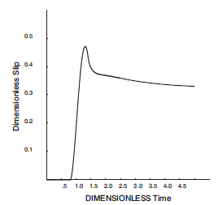
图 10：点 P 处滑移时程的无量纲解析结果（无量纲滑移 = \((4h \rho \beta^2/m_o)\delta u\)，无量纲时间 = \(t\beta / h\)）（Day 1985）。
模型设置
图 11（Figure 11） 给出了 3DEC 所建模的问题几何。震源位于 A 点（\(x\) = 0，\(z\) = 2 \(h\)），不连续面位于 \(z = h\) 处。动力输入施加在半径为 0.05 h 的半圆形边界上。在 P 点监测不连续面的滑移运动。
连续介质采用弹性、完全可变形块体建模，如 图 12（Figure 12） 所示，每个块体又进一步离散为四面体网格单元。为使 \(y\) 方向上仅生成一个网格单元，假定块体在 \(y\) 方向的厚度与四面体的平均棱长相同。平均棱长为 0.065 \(h\)。为模拟连续的弹性介质，除该不连续面外，所有节理均设为“已连接”。为满足解析解所隐含的假定，对该不连续面赋予了高法向刚度和高抗拉强度。
在模型顶部和底部的水平边界上，以及在 \(x\) = 4 \(h\) 处的竖直边界上，施加了非反射边界条件。在 \(x\) = 0 处的竖直边界上施加了对称边界条件。为模拟平面应变条件，在 \(y\) = 0 和 \(y\) = 0.065 \(h\) 处沿 \(xz\) 平面的边界上约束了 \(y\) 方向的位移。
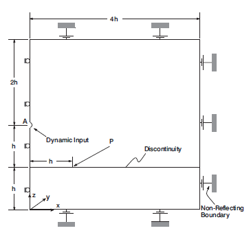
图 11：数值模型的问题几何与边界条件。

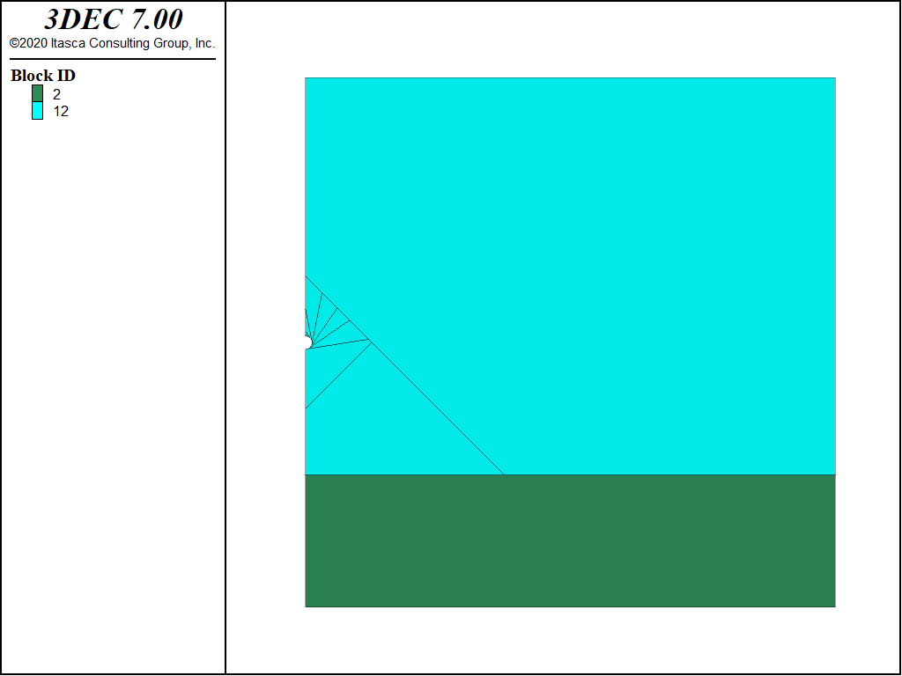
图 12：3DEC 模型，显示半圆形震源以及用于提供合适网格离散的“已连接”块体。
节理与连续介质的属性
弹性块体采用了以下属性。
| 几何尺度 | \(h\) = 10, 000 MPa/m |
| 质量密度 density | 10,000 MPa/m |
| 剪切模量 shear | 100 Pa |
| 体积模量 bulk | 166.67 Pa |
分析中采用了莫尔-库仑节理本构关系。用于该节理关系的具体 3DEC 参数列于下文。
| 法向刚度 stiffness-normal | 10,000 Pa/m |
| 剪切刚度 stiffness-shear | 0.1 Pa/m |
| 摩擦角 friction | 0 |
| Cohesion cohesion | 0 |
动力荷载
在半圆形边界上施加了与无限介质中线源动力解相对应的径向速度。为避免震源处奇异性带来的问题，动力输入施加在距名义点源 0.05 \(h\) 的表面上。
同时采用速度输入和压力输入的 3DEC 分析表明，与压力输入相比，速度输入与解析解吻合得更好。与压力边界相比，速度边界能更准确地表示动应力，因为在压力输入中，震源函数只是按静应力大小进行缩放，忽略了输入边界处动应力的惯性效应。
Lemos（1987）给出的线源径向位移为
其中 \(r\) 为径向距离。
相应的速度为
如 图 13（Figure 13） 所示，在 \(r = 0.05 h\) 处的实际输入速度记录是将式 (4) 与式 (3) 进行卷积得到的。

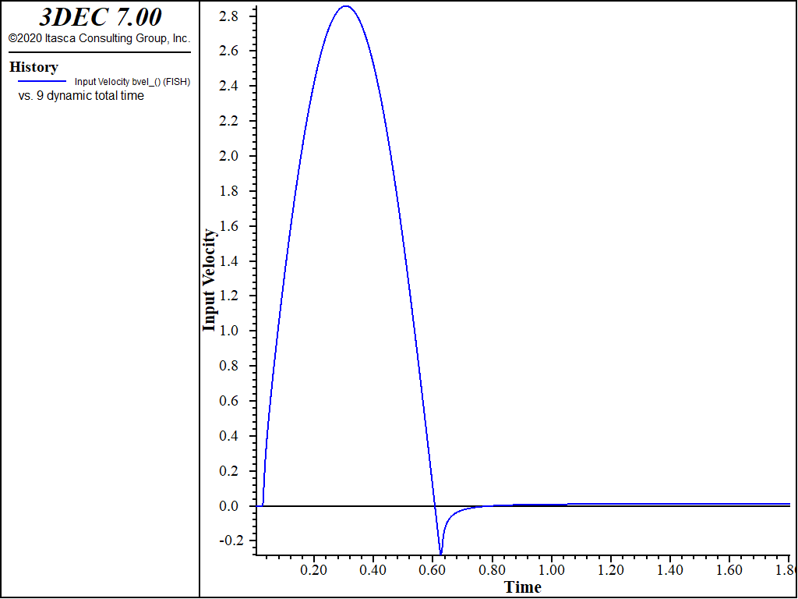
图 13：在 \(r = 0.05\ h\) 处指定的输入径向速度时程（无量纲速度 = \((h^2\rho\beta / m_o)v\)，无量纲时间 = \(\tau\beta/ h)\)。
边界处 \(r = 0.05 h\) 位置的速度时程在 FISH 函数 边界速度时程 FISH 函数（fvel inp） 中计算（列于下文）。
结果
点 P 处的无量纲滑移绘制成随无量纲时间变化的曲线，如 图 14（Figure 14） 所示。将该无量纲滑移与 Day（1985）给出的解析解进行比较。3DEC 在 \(r = 0.05 h\) 处的半圆形区域采用速度输入。3DEC 的峰值滑移误差为 1.7%。
图 14（Figure 14） 中的结果是采用最大网格单元长度为 0.065 \(h\) 的网格得到的。由于沿不连续面的摩擦为零，不连续面上的滑移反应包含更高频的分量。这要求更细的网格才能准确表示。
图 14（Figure 14） 中 3DEC 分析的无量纲滑移在无量纲时间 1.49 之前与解析解吻合良好。结果表明，在无量纲时间 1.49 之后出现明显偏差，这可归因于边界反射。
沿顶部、底部和右侧边界使用非反射边界。此类黏性边界设计用于吸收法向入射的 \(p-\) 波和 \(s\) 波，但在此动力滑移问题中不能完全有效，因为不连续面穿过了边界。不过，黏性边界仍优于滚轴边界。

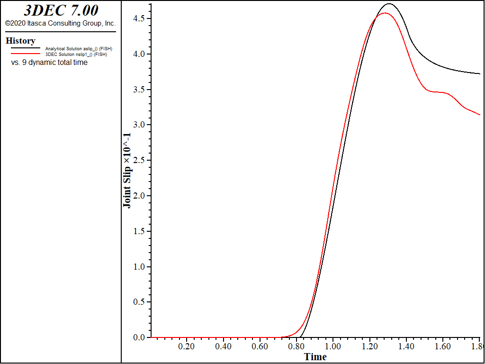
图 14：点 P 处无量纲滑移与库仑节理模型的比较（无量纲滑移 = \((4h\rho\beta^2/ m_o)\delta u\)，无量纲时间 = \(\tau\beta/h\)）。
数据文件 - 线源
;==========================================================================
; 验证试验——采用 3DEC 模拟动力荷载下的滑移裂纹
; 节理模型：Mohr-Coulomb 模型
; 弹性块体
;
; 动力分析
;==========================================================================
;
model new
model random 10000
model config dynamic
model large-strain on
; --- 几何形状 ---
block create brick 0,40 0,0.65 0,40
;
block cut j-set dip 0 d-d 0 ori 0,0,10
block hide range pos-x 0,40 pos-y 0,10 pos-z 0,10
block cut j-set dip 45 d-d 90 ori 0,0,25 join
block hide range plane dip 45 d-d 90 ori 0,0,25 above
block cut j-set dip 45 d-d 270 ori 0,0,15 join
;
block hide off
block cut tunnel ...
face-1 0,0,20.5 0.19,0,20.46 .35,0,20.35 0.46,0,20.2 .5,0,20.0 ...
.46,0,19.8 0.35,0,19.64 .19,0,19.53 0.0,0,19.5 ...
face-2 0,.65,20.5 0.19,.65,20.46 .35,.65,20.35 0.46,.65,20.2 .5,.65,20.0 ...
.46,.65,19.8 0.35,.65,19.64 .19,.65,19.53 0.0,.65,19.5 ...
group 'tunnel'
;
block delete range group 'tunnel'
block zone gen edgelength 0.650
model save "day3d-zoned"
model rest "day3d-zoned"
; --- 参数 ---
block zone cmodel assign el
block zone prop dens=1.0 bulk=166.67 shear=100.0
block contact jmodel assign mohr
block contact prop stiffness-normal 1e4 stiffness-shear 0.1 ten 1e6
block contact material-table default prop stiffness-normal 1e4 ...
stiffness-shear 0.1
;
; --- 边界条件
block gridpoint apply visc-x visc-z range pos-z 0 ; z=0 处的 xz 平面
block gridpoint apply visc-x visc-z range pos-z 40 ; z=40 处的 xz 平面
block gridpoint apply visc-x visc-z range pos-x 40 ; x=40 处的 xz 平面
;
; 在 y=0 和 y=0.65 的 xz 平面上设置滚动边界
block gridpoint apply vel-y=0 range pos-y 0.0
block gridpoint apply vel-y=0 range pos-y 0.65
; 在 x=0 处设置对称边界
block gridpoint apply vel-x=0 range pos-x -1 .5
; 沿圆柱形切口设置速度边界条件
program call "vel_inp.fis"
program call "ana_slp.fis"
model cycle 1
program call "day3d.fis"
[_load( 0.0, 20.0, 0.5)]
;
block insitu stress -1.0e-9 -1.0e-9 -1.0e-9 0 0 0
; 设置历史
hist interval=10
fish hist dtime_
fish hist name 'Input Velocity' bvel_
fish hist name 'Analytical Solution' aslip_
fish hist name '3DEC Solution' nslip1_
fish hist nslip2_
block hist vel-x pos 0.5 20 0.3
block hist vel-z pos 0 20.5 .03
block hist vel-z pos 0 19.5 0.03
model hist dynamic time-total
fish callback add _compare 1
model cyc 4000
model save "day3d"
FISH 文件
;=====================================================
;
; 计算洞口轮廓上的单位力
;
;=====================================================
;
fish def _load(xc_, zc_, dist_)
loop foreach igp_ block.gp.list
x_ = block.gp.pos.x(igp_)
z_ = block.gp.pos.z(igp_)
d_ = math.sqrt((x_-xc_)*(x_-xc_)+(z_-zc_)*(z_-zc_))
if math.abs(d_-dist_) < 0.05*dist_
nx_ = (x_-xc_)/d_
nz_ = (z_-zc_)/d_
gp_id = block.gp.id(igp_)
command
block gridpoint apply vel-x [nx_] vel-z [nz_] ...
table [_vtab] range id [gp_id]
end_command
end_if
end_loop
end
;=====================================================
;
; 查找最接近关注点的接触
; 输入两个矢量
;
;=====================================================
fish def _find(f_, b_)
global v_s_
global h_n_
global rho_
global m0_
dfmax_ = 1.e30
dbmax_ = 1.e30
loop foreach icx_ block.subcontact.list
pos_ = block.subcontact.pos(icx_)
df_= math.mag(pos_ - f_)
db_= math.mag(pos_ - b_)
if df_ < dfmax_ then
dfmax_ = df_
icf_ = icx_
end_if
if db_ < dbmax_ then
dbmax_ = db_
icb_ = icx_
end_if
end_loop
vscale_ = m0_/(h_n_*h_n_*rho_*v_s_)
dscale_ = 0.25*m0_/(h_n_*rho_*v_s_*v_s_)
end
[v_s_=10.]
[h_n_=10.]
[rho_=1.]
[m0_=1.]
[_find( (10,10,0), (10,10,0.65) )]
;=====================================================
;
; 将解析解存入历史，并
; 将数值解转换为无量纲
; 形式
;
;=====================================================
[nslip1_max = 0.0]
[aslip_max = 0.0]
fish def _compare
;while_stepping
dtime_ = dynamic.time.total*v_s_/h_n_
bvel_ = table(_vtab,dynamic.time.total)/vscale_
aslip_ = table(_utab,dtime_)
slip1_ = block.subcontact.disp.shear(icf_)
slip2_ = block.subcontact.disp.shear(icb_)
nslip1_ = math.mag(slip1_)/dscale_
nslip2_ = math.mag(slip2_)/dscale_
nslip1_max = math.max(nslip1_max,nslip1_)
aslip_max = math.max(aslip_max,aslip_)
end
FISH 文件 - 速度输入
;=====================================================
;
; 用于生成径向速度的 FISH 函数
; r=0.05h 处的输入曲线
;
; 输入：
; vl --- P 波速度
; per --- 波的周期
; tt --- 总时间
; xd --- 水平距离
; nt --- 数据点总数
;
; 输出：
; 速度曲线存入表 1
;=====================================================
;
fish def ini_par
vl = 0.0
per = 0.0
tt = 0.0
xd = 0.0
nt = 1000
_vtab = '1' ; 用于存储速度曲线的数据表
_fptab = '2'
_vhtab = '3'
end
[ini_par]
;
fish def vel_inp
if xd <= 0.0
exit
endif
if per <= 0.0
exit
endif
_w = 2.0*math.pi/per
_dt = tt/float(nt)
_ca = -1./(2.0*math.pi*vl)
_cb = _ca/(xd * xd)
_cc = _cb * _dt
;
; 通过卷积获得速度记录，
; 所用函数为阶跃函数对应的径向位移
; 与压力历史的二阶导数
;
loop _n (1, nt)
_t = float(_n-1) * _dt
table.x(_fptab, _n) = _t
if _t < 0.5*per
table.y(_fptab, _n) = 0.5*_w*_w*math.cos(_w*_t)
_nfp = _n
else
table.y(_fptab, _n) = 0.0
endif
end_loop
;
; --- 位移 -----
;
_t0 = xd/vl
_j0 = int(_t0/_dt)
_j0 = _j0 + 1
loop _n (1, nt)
_t = float(_n-1) * _dt
if _n < _j0
table.y(_vhtab, _n) = 0.0
else
_t = _t0 + 0.5*_dt + float(_n-_j0)*_dt
_cf = _t*vl/xd
_cf2 = _cf * _cf
_cs = math.sqrt(_cf2 - 1.0)
_cg = _cs / _t
table.y(_vhtab, _n) = _cc / _cg
endif
table.x(_vhtab, _n) = _t
end_loop
;
; ---- 速度 ---------
;
table.y(_vtab, 1) = 0.0
table.x(_vtab, 1) = 0.0
loop _n (2, nt)
_vn = 0.0
_j1 = math.min(_nfp, _n-1)
loop _n1 (1, _j1)
_vn = _vn + table.y(_fptab, _n1) * table.y(_vhtab, (_n - _n1))
end_loop
table.y(_vtab, _n) = _vn
end_loop
;
; 对压力源改变符号
;
_vmax = -1e20
_vmin = 1e20
loop _n (1, nt)
table.y(_vtab, _n) = -1.0*table.y(_vtab, _n)
_vi = table.y(_vtab, _n)
vmin = math.min(_vmin, _vi)
vmax = math.max(_vmax, _vi)
table.x(_vtab, _n) = float(_n-1)*_dt
end_loop
; oo = io.out(' vmin, vmax = ', string(vmin), ',', string(vmax))
end
[vl=17.32]
[per=1.2]
[tt=1.4]
[xd=0.5]
[nt=1000]
tab [_vtab] add 0,0
tab [_fptab] add 0,0
tab [_vhtab] add 0,0
[vel_inp]
FISH 文件 - 解析解
;=====================================================================
; 该函数计算爆炸荷载引起的
; 无限延伸的单个不连续面的滑移动力响应。
; 含不连续面弹性介质中线源的解析解
; 由 S. M. Day（1985）给出。
;
; 输入：_nt --- 待创建的数据点总数
; _dt --- 时间增量
; _xd --- 水平距离 x
; _hd --- 竖向距离 _hd
; per --- 输入函数的周期
; rho --- 密度
; m0 --- 源强度
; gamma --- 无量纲黏结参数
; _vp --- 压缩波速度
; _vs --- 剪切波速度
;
; 输出：无量纲关系存入表 4。
; 未归一化的数值存入表 6。
;=====================================================================
;
fish def add_complex(Re_a, Im_a, Re_b, Im_b)
; 两个复变量相加
; 输入：Za、Zb
; 输出：Z = Re(Z) + Im(Z)
Re_z = Re_a + Re_b
Im_z = Im_a + Im_b
end
;
fish def mult_complex(Re_a, Im_a, Re_b, Im_b)
; 两个复变量相乘
; 输入：Za、Zb
; 输出：Z = Re(Z) + Im(Z)
Re_z = Re_a*Re_b - Im_a*Im_b
Im_z = Re_a*Im_b + Im_a*Re_b
end
;
fish def divi_complex(Re_a, Im_a, Re_b, Im_b)
; 复变量相除 Za/Zb
_deno = Re_b * Re_b + Im_b * Im_b
if _deno = 0.0
divi_compex = 1
exit
endif
Re_z = (Re_a*Re_b + Im_a*Im_b)/_deno
Im_z = (Im_a*Re_b - Re_a*Im_b)/_deno
end
;
fish def sqrt_complex(Re_x, Im_x)
; 复变量的平方根
; 输入：Zx
; 输出：Zr = Re(Zr) + Im(Zr)
; _theta = atan2(Im_x, Re_x) * 0.5
_arg = float(Im_x/Re_x)
_theta = math.atan(_arg) * 0.5
_sqrtr = math.sqrt(math.sqrt(Re_x*Re_x + Im_x*Im_x))
Re_zr = _sqrtr*math.cos(_theta)
Im_zr = _sqrtr*math.sin(_theta)
end
;
fish def ana_slp
;
; 输入 _nt、_dt、_xd、_hd、gamma、per、rho
;
global _nt
global _dt
global _xd
global _hd
global gamma
global per
global rho
global _vs
global _vp
global m0
global _utab
global _ftab
global _uftab
_dt = float(_dt)
_xd = float(_xd)
_hd = float(_hd)
gamma = float(gamma)
per = float(per)
rho = float(rho)
;
_vs2 = _vs*_vs
_vs4 = _vs2*_vs2
_2vs2 = 2.0 * _vs2
_4vs4 = 4.0 * _vs4
_r = math.sqrt(_xd*_xd + _hd*_hd)
_r2 = _r * _r
loop _n (1, _nt)
_t = float(_n) * _dt
_tau = _t - _r/_vp
if _tau > 0.0
_t2r2 = math.sqrt(_t*_t - (_r/_vp)*(_r/_vp))
Re_cp = _t*_xd / _r2
Im_cp = _t2r2*_hd / _r2
Re_a = Re_cp
Im_a = Im_cp
Re_b = Re_cp
Im_b = Im_cp
mult_complex(Re_a,im_a,Re_b,im_b) ; Z^ 2 ---> Re(Z) + Im(Z)
Re_z2 = Re_z
Im_z2 = Im_z
;
Re_x = 1.0/(_vp*_vp) - Re_z2
Im_x = -1.0 * Im_z2
sqrt_complex(Re_x,Im_x) ; sqrt(Zx)
Re_cetap = Re_zr
Im_cetap = Im_zr
;
Re_x = 1.0/(_vs*_vs) - Re_z2
Im_x = -1.0 * Im_z2
sqrt_complex(Re_x,Im_x) ; sqrt(Zx)
Re_cetas = Re_zr
Im_cetas = Im_zr
;
Re_a = 1.0 - _2vs2 * Re_z2
Im_a = -1.0 * _2vs2 * Im_z2
Re_b = Re_a
Im_b = Im_a
mult_complex(Re_a,Im_a,Re_b,Im_b) ; (1. - 2.*vs^ 2*cp^ 2) ^ 2
Re_temp1 = Re_z
Im_temp1 = Im_z
;
Re_a = Re_cetap
Im_a = Im_cetap
Re_b = Re_cetas
Im_b = Im_cetas
mult_complex(Re_a,Im_a,Re_b,Im_b) ; cetap * cetas
Re_a = Re_z
Im_a = Im_z
Re_b = Re_z2
Im_b = Im_z2
mult_complex(Re_a,Im_a,Re_b,Im_b) ; cetap * cetas * cp^ 2
Re_temp2 = _4vs4 * Re_z
Im_temp2 = _4vs4 * Im_z
;
Re_cr = Re_temp1 + Re_temp2
Im_cr = Im_temp1 + Im_temp2
Re_cr = Re_cr + 2.0 * _vs * gamma * Re_cetas
Im_cr = Im_cr + 2.0 * _vs * gamma * Im_cetas
_dut = 2.0*m0*_vs*_vs/(math.pi*rho*_vp*_vp)
; 注意，Re_a、Im_a 存储 (cetap*cetas)
Re_b = Re_cp
Im_b = Im_cp
mult_complex(Re_a,Im_a,Re_b,Im_b) ; cetap * cetas * cp
;
Re_a = Re_z
Im_a = Im_z
Re_b = Re_cr
Im_b = Im_cr
if divi_complex(Re_a,Im_a,Re_b,Im_b) = 1 ; cetap * cetas * cp / cr
oo = io.out(' divided by zero')
exit
endif
_dut = _dut * Re_z / _t2r2
table.y(_utab, _n) = _dut
else
table.y(_utab, _n) = 0.0
endif
end_loop
;
_nf = int(per/_dt + 0.0001)
_sum = 0.0
loop _n (1, _nf)
_ph = float(_n) * _dt / per
if _ph < 1.0
table.y(_ftab, _n) = math.sin(math.pi * _ph)
else
table.y(_ftab, _n) = 0.0
endif
_sum = _sum + table.y(_ftab, _n)
end_loop
;
; du 与时间的关系
;
loop _i (1, _nt)
_uf = 0.0
_n = math.min(_nf, _i)
loop _j (1, _n)
_uf = _uf + table.y(_utab,_i-_j+1)*table.y(_ftab,_j)
end_loop
table.y(_uftab, _i) = _uf / _sum
table.x(_uftab, _i) = float(_i) * _dt
end_loop
;
; 无量纲关系
;
loop _n (1, _nt)
table.y(_utab, _n) = (4.0*_hd*rho*_vs*_vs/m0)*table.y(_uftab, _n)
table.x(_utab, _n) = float(_n) * _dt * _vs / _hd
end_loop
;
end
[_nt=1000]
[_dt = 0.005]
[_xd=10.]
[_hd=10.]
[_vs=10.]
[_vp=17.320508]
[gamma=0.0]
[per=0.6]
[rho=1.0]
[m0=1.0]
[_utab='4']
[_ftab='5']
[_uftab='6']
;
tab [_utab] add 0,0
tab [_ftab] add 0,0
tab [_uftab] add 0,0
[ana_slp]
参考文献
Bathe, K.-J., and E. L.Wilson. Numerical Methods in Finite Element Analysis. Englewood Cliffs, New Jersey: Prentice-Hall Inc. (1976).
Belytschko, T. “An Overview of Semidiscretization and Time Integration Procedures,” in Computational Methods for Transient Analysis, Ch. 1, pp. 1-65. New York: Elsevier Science Publishers, B.V. (1983).
Biggs, J. M. Introduction to Structural Dynamics. New York: McGraw-Hill (1964).
Chopra, A. K. Dynamics of Structures. Prentice Hall (1995).
Cundall, P. A.《显式时间计算的自适应密度缩放》，载于第四届国际岩土力学数值方法会议论文集（加拿大埃德蒙顿，1982），第 23-26 页（1982）。
Cundall, P. A., et al. “Computer Modeling of Jointed Rock Masses,” U.S. Army, Engineer Waterways Experiment Station, Technical Report WES-TR-N-78-4 (August 1978).
Cundall, P. A., et al. “NESSI – Soil Structure Interaction Program for Dynamic and Static Problems,” Norwegian Geotechnical Institute, Report 51508-9 (December 1980).
Cundall, P. A., et al. “Solution of Infinite Domain Dynamic Problems by Finite Modelling in the Time Domain,” in Proceedings of the 2nd International Conference on Applied Numerical Modelling (Madrid, Spain, September 1978), pp. 341-351. London: Pentech Press (1979).
Day, S. M. “Test Problem for Plane Strain Block Motion Codes,” S-Cubed Memorandum (May 1 1985).
Ferreira, A. J. M., and G. E. Fasshauer. “Computation of natural frequencies of shear deformable beams and plates by an RBF-pseudospectral method,” Comput. Methods Appl. Mech. Engrg., 196, 134-146 (2006).
Gemant, A., and W. Jackson. “The Measurement of Internal Friction in Some Solid Dielectric Materials,” The London, Edinburgh, and Dublin Philosophical Magazine & Journal of Science, XXII, 960-983 (1937).
Gerrard, C. M. “Elastic Models of Rock Masses Having One, Two and Three Sets of Joints,” Int. J. Rock Mech. Min. Sci. & Geomech. Abstr., 19, 15-23 (1982).
Kuhlmeyer, R. L., and J. Lysmer. “Finite Element Method Accuracy for Wave Propagation Problems,” J. Soil Mech. & Foundations Div., ASCE, 99(SM5), 421-427 (May, 1973).
Kunar, R. R., P. J. Beresford and P. A. Cundall. “A Tested Soil-Structure Model for Surface Structures,” in Proceedings of the Symposium on Soil-Structure Interaction (Roorkee University, India, January 1977), Vol. 1, pp. 137-144. Meerut, India: Sarita Prakashan (1977).
Lemos, J. “A Distinct Element Model for Dynamic Analysis of Jointed Rock with Application to Dam Foundations and Fault Motion.” Ph.D. Thesis, University of Minnesota (June 1987).
Lemos, J. “Numerical Issues in the Representation of Masonry Structural Dynamics with Discrete Elements,” in Proceedings of the ECCOMAS Thematic Conference on Computational Methods in Structural Dynamics and Earthquake Engineering (Rethymno, Crete, Greece, 13-16 June 2007). M. Papadrakakis et al., eds. (2007).
Lysmer, J., and R. Kuhlemeyer. “Finite Dynamic Model for Infinite Media,” J. Eng. Mech., Div. ASCE, 95:EM4, 859-877 (1969).
Lysmer, J., and G. Waas. “Shear Waves in Plane Infinite Structures,” J. Eng. Mech., Div. ASCE, 98, 85-105 (1972).
Miller, R. K. “The Effects of Boundary Friction on the Propagation of Elastic Waves,” Bull. Seis. Soc. America, 68, 987-998 (1978).
Myer, L. R., L. J. Pyrak-Nolte and N. G. W. Cook. “Effects of Single Fractures on Seismic Wave Propagation,” in Proceedings of the International Symposium on Rock Joints, pp. 413-422. Rotterdam: A. A. Balkema (1990).
Ohnishi, Y., et al. “Verification of Input Parameters for Distinct Element Analysis of Jointed Rock Mass,” in Proceedings of the International Symposium on Fundamentals of Rock Joints (Björkliden, Sweden, September 1985), pp. 205-214. O. Stephansson, ed. Luleå: CENTEK Publishers (1985).
Otter, J. R. H., A. C. Cassell and R. E. Hobbs. “Dynamic Relaxation,” Proc. Inst. Civil Eng., 35, 633-665 (1966).
Roesset, J. M., and M. M. Ettouney. “Transmitting Boundaries: A Comparison,” Int. J. Num. & Analy. Methods Geomech., 1, 151-176 (1977).
Seed, H. B., P. P. Martin and J. Lysmer. “The Generation and Dissipation of Pore Water Pressures during Soil Liquefaction,” University of California, Berkeley, Earthquake Engineering Research Center, NSF Report PB-252 648 (August 1975).
Singh, B. “Continuum Characterization of Jointed Rock Masses: Part I – The Constitutive Equations,” Int. J. Rock Mech. Min. Sci. & Geomech. Abstr., 10, 311-335 (1973).
Wegel, R. L., and H.Walther. “Internal Dissipation in Solids for Small Cyclic Strains,” Physics, 6, 141-157 (1935).
White, W., S. Valliappan and I. K. Lee. “Unified Boundary for Finite Dynamic Models,” J. Eng. Mech., Div. ASCE, 103, 949-964 (1977).
Wolf, J. P. Dynamic Soil-Structure Interaction. New Jersey: Prentice-Hall (1985).
| 这些内容对您有帮助吗？… | FLAC3D © 2019, Itasca | 原文更新于 2020 年 10 月 8 日 |